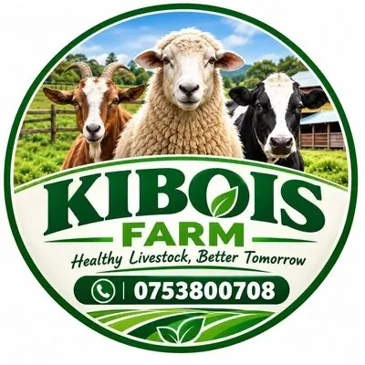
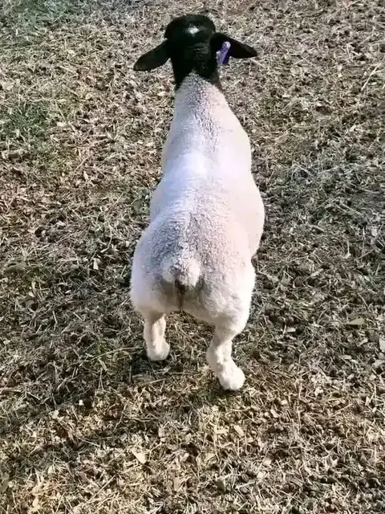

Dorper Sheep FarmPremium Dorper Sheep
Healthy, well-fed Dorper sheep available at competitive prices. All animals are vaccinated and ready for your farm.
Select the age category that suits your farming needs
We are a trusted livestock supplier based in Dundori, Nakuru, Kenya, specializing in premium Dorper sheep. Our animals are raised with care, ensuring they are healthy, well-nourished, and ready for productive farming.

Ready to purchase or need more information? Contact us directly via WhatsApp or phone.